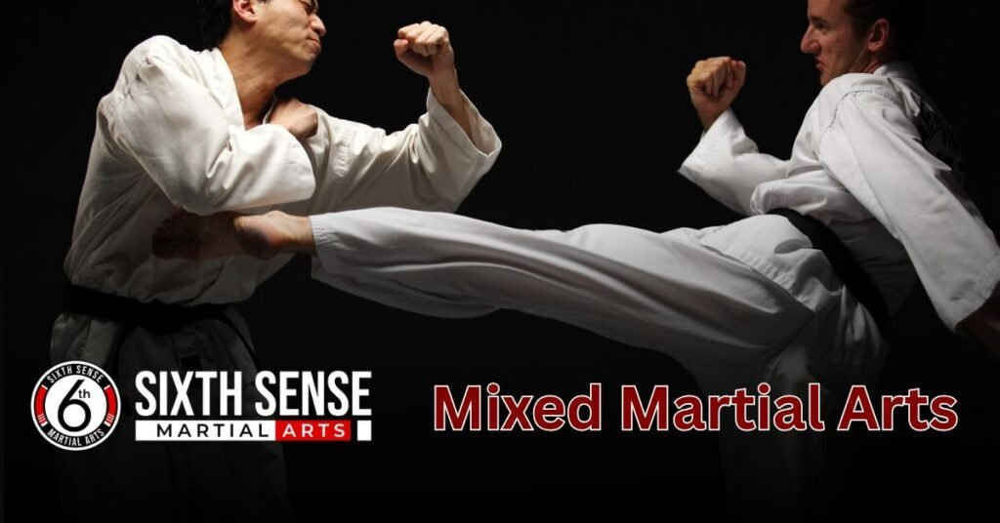
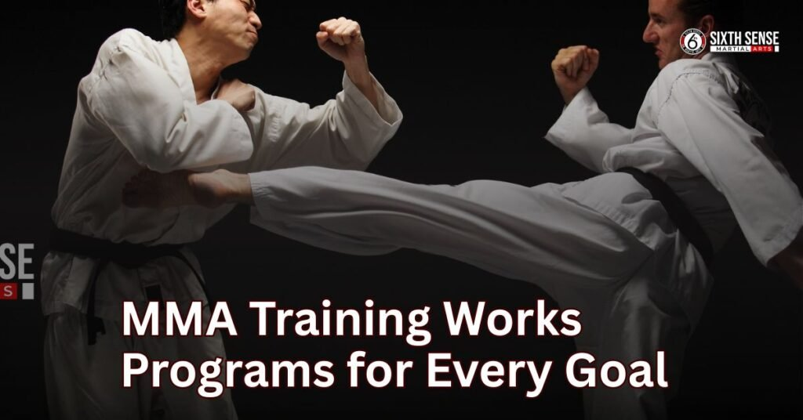

Mixed Martial Arts near me with Proven Real results

Mixed martial arts near me you isn’t just about learning to fight it’s about building confidence, discipline, and long-term well being through consistent, smart training. A local gym offers the convenience to stay in a steady routine, without the stress of a long commute, so you can focus on real progress.
It’s a powerful way to grow physically, stay mentally sharp, and develop a strong mindset that supports your life outside the gym. Whether you’re switching from another workout or just looking for something better, MMA offers the support, community, and inner strength that lasts.
What is Mixed Martial Arts (MMA)?
Mixed Martial Arts (MMA) is a full-contact sport that mixes traditional and modern styles like Muay Thai, BJJ, kickboxing, boxing, Greco Roman wrestling, and judo to build a powerful and unpredictable way of fighting. It teaches both striking and grappling skills, using the clinch, standing moves, and ground control to help with self-defense and real life scenarios.
MMA training builds strength, fitness, flexibility, and mental toughness while teaching discipline, resilience, and keeping you prepared. Whether it’s learning Brazilian Jiu-Jitsu, watching the UFC Championship, or training for growth, MMA develops the self through endurance, sharp range control, and avoiding dirty moves it’s the ultimate test of all-around skill.
Looking for Mixed Martial Arts Near Me? SixthSense mma has you covered
Mixed Martial Arts near me? At SixthSense MMA, getting to your training is simple and stress-free whether you’re driving, taking public transport, or coming on foot. We’re located right near the main road, close to school, work, and even a few bus stops, so it’s easy to walk in or stop by.
You’ll find free parking outside, clear directions, and a location that’s just minutes from home. Whether you check the map, follow road turns, or use a stop nearby, you’ll quickly reach us without confusion. At SixthSense, we make sure your focus stays on real MMA training not getting lost on the way.
What You Can Expect at SixthSense MMA
At SixthSense MMA, we’ve created more than just a gym it’s a place where real progress, respect, and learning come together. From beginner to advanced, everyone finds support, strong coaching, and a focused environment built for serious growth.
1. Respectful Culture Without Ego or Intimidation
Here, every student is treated with respect, and there’s no space for ego or intimidation. You’ll train in a space where your effort matters more than your skill level, and where coaches and peers uplift each other. Whether you’re new or experienced, the environment stays friendly and focused on your personal growth.
2. Step-by-Step Coaching That Builds Real Skills
Our instruction follows a step-by-step structure, so you’re never thrown into chaos. Every move is broken down with clear teaching, helping you master technique without pressure. From practical self-defense to fight-ready skills, you’ll see steady improvement in every session as you train with purpose.
3. Focused Rounds That Develop Technique and Confidence
Each round in training is designed to help you build focus, not just sweat. You’ll work through detailed drills that sharpen your fighting skills, giving you a real understanding of timing, moves, and structure.
4. Motivation and Support at Every Level
No matter your level, you’ll feel the support from your coaches and the wider gym community. Training under pressure becomes easier with the right motivation, and we make sure your journey stays on track through personalized feedback and a positive push when you need it most.
5. A Learning Culture That Encourages Real Growth
We’ve built a culture where learning comes first and every mistake is a chance to grow. You won’t just repeat movesyou’ll unde rstand the why behind each technique. That’s the difference at SixthSense: a place where fighting becomes a process of real improvement, inside and out.
What Makes a Great MMA Near You?
When searching for a serious MMA gym that matches your goals, it’s not just about location it’s about the environment, the people, and how the place helps your real growth. Here’s what truly sets a great gym apart.
1. Qualified Coaches Who Teach with Honesty and Care
Great MMA gyms have qualified instructors and coaches who don’t just bark orders they explain things clearly, answer your questions, and give you personal attention. They’re honest, patient, and supportive, focusing on your progress without unnecessary pressure.
2. Structured Training with Flexibility for Beginners
Whether you’re a beginner or more advanced, a great gym offers solid structure but stays flexible with plans, membership, and training. You’ll find organized drills, thoughtful teaching, and space to go at your own pace. Many offer a trial so you can get a feel for the experience before committing.
3. A Clean, Safe, and Respectful Training Space
Cleanliness and hygiene matter. A good MMA gym isn’t overcrowded or chaotic—it’s safe, well-kept, and has a strong sense of mutual respect. You won’t see a sea of red flags like dirty mats or careless behavior. Instead, you’ll find a gym that protects its people and creates space for serious work.
How Our MMA Training Works Programs for Every Goal

Mixed martial arts near me when you are sechering then you find sixthensemma .At SixthSense MMA, our training isn’t random it’s designed with purpose, progress, and your personal goals in mind. We blend structure with flexibility to make sure every student, from first-timers to those who compete, moves forward with confidence.
1. Structured Programs That Fit Your Life
Our program is built with a clear plan and flexible schedule, making it easier for people with busy times to stay consistent. Whether you’re here for self-defense, fitness, or fight prep, there’s a space for you with sessions that match your needs and goals.
2. Group Training That Builds Skills and Energy
In our group classes, you’ll gain motivation from others and build your skills together through focused drills, cardio, and controlled sparring. These classes keep the energy high while making sure each person gets attention on the technical parts that matter most.
3. Routine That Tracks Real Progress
With a training routine that’s easy to track, you’ll see real progress over time. We help you set goals and guide you to stay consistent, so you feel more confident with every step. Whether it’s sharpening techniques or improving endurance, every session has a purpose.
4. Focused Sparring and Drills That Build Strong Fighters
We keep our sparring and drills safe, smart, and focused on learning. It’s not about going hard every time it’s about being technical, gaining confidence, and becoming strong in both offense and defense. You’ll build real fight IQ while staying in control.
Why More Locals Are Choosing SixthSense MMA
People in the community aren’t just signing up for another gym they’re making a real choice for lasting change with SixthSense MMA. Here’s why more locals are joining, staying, and telling others about their experience.
1. Honest Coaching With No Hidden Games
We keep things upfront, from pricing to how we teach. There are no hidden fees or confusing contractsjust honest coaching and real support. You’ll know what you’re getting, who’s teaching, and how your training will help you reach your goals.
2. A Welcoming Community That Supports You
The vibe here is different. Whether you’re ready to walk in for the first time or already compete, you’ll feel the difference. People stick around not just for the training, but for the life and friendships they build.
3. Focused Attention in a Smaller Setting
Our gym is smaller by design, so you’re never just a number. Every coach gives you the attention you need, helping you stay on track and challenged without feeling lost. This kind of teaching ensures real progress, especially when you’re aiming for long-term results.
4. Real Results Without the Pressure to Chase Hype
We’re not here to chase trends or sell dreams we’re here to fix your weaknesses, grow your strengths, and deliver results that last. You’ll be challenged, encouraged to stick to your training, and supported every step of the way with realistic goals that y
Student Reviews:
At SixthSense MMA, our members are the heartbeat of our gym. From total beginners to competitive fighters, people walk in with different goals and they leave with real progress, stronger skills, and a renewed mindset.
Here’s what some of our U.S.-based members have to say:
1. Emily R. – Chicago, IL
” The coaches are patient and know how to push you without overwhelming you. I’ve never felt stronger.”
2. James L. – Dallas, TX
“I was nervous to start MMA at 42, but SixthSense made it easy. The small class sizes and welcoming vibe helped me feel comfortable right away.”
3. Marcus D. – San Diego, CA
“I’ve trained at other gyms, but this one is different. Real structure, real technique, and coaches who care. I’ve improved more here in three months than I did in a year elsewhere.”
4. Heather S. – Miami, FL
“I started for self-defense. Now I train three times a week. The skills I’ve learned are empowering, and I love the energy in every class.”
5. Andre T. – Brooklyn, NY
“SixthSense has helped me cut 25 pounds and build confidence. There’s no ego here — just hard work and good people.”
6. Lisa M. – Seattle, WA
“I never thought I’d be sparring, but here I am. The coaches explain everything clearly, and I feel safer and stronger every week.”
7. Kevin B. – Phoenix, AZ
” You show up, you work, and you grow. That’s what I was looking for.”
8. Rachel A. – Denver, CO
“I’ve made real friends here. It’s more than just a gym — it’s a place where you actually want to show up.”
Book Your MMA Class Today SixthSense MMA Is Ready When You Are
If you’re curious about MMA, now’s the right time to get started. With no contracts, a pressure-free trial, and all gear provided, it’s simple to sign-up, either online or in person. Whether you’re looking to get in shape or shift your mindset, our classes are available and easy to pick. Contact us today to take that first step we’ve got the rest covered.
Conclusion
This is not about fake promises or flashy ads it’s about a real path to personal growth, self-defense, and lasting results. The journey isn’t always easy, but with the right coaching, supportive community, and structured training, anyone can become stronger both physically and mentally.
Whether your goal is weight loss, preparing for competition, or simply feeling more confident, there’s a program and environment built to support you without pressure or intimidation. Each day is a chance to start, and with flexible classes, real workouts, and a team that truly cares, you’re guided, challenged, and never alone. This isn’t just a gym it’s a place to belong, to grow, and to finally get the results you deserve.
FAQ's
Starting MMA can feel nervous or even overwhelming, but the truth is it’s more beginner friendly than you think. Whether you’re aspiring to fight or just trying something new for fitness, we guide anyone through each step of the journey with clarity and care.
To keep things simple, wear a clean t-shirt, shorts, and bring water bottles. We provide clean mats, and our team keeps everything properly sanitized. No need to buy all the gear at once you can borrow gloves, wraps, and get guidance on when to level up.
Absolutely. Our classes are designed for beginners with a focus on control, safety, and confidence-building. You’ll learn the basics of technique, movement, and rules in a low-pressure setting. Every coach is here to support you, answer your questions, and make you feel comfortable from day one.
There’s no rush. We offer trial options so you can try a class, meet the team, and see if the style fits you. Whether you’re a total beginner, returning after time off, or one of many hobbyists looking for something real, we help you start without stress. No need to commit right away just let the experience guide you.
We monitor your training, offer adjustments, and teach you how to develop the right mindset over time. With the right coach, a strong team, and clear goals, you’ll grow confident, move with purpose, and feel safe and supported as you improve. It’s all about building confidence—not rushing to prove yourself.
Train with us in Coppell
The first class is free. Shorts, a t-shirt and a water bottle. We lend the rest.
Book a free class